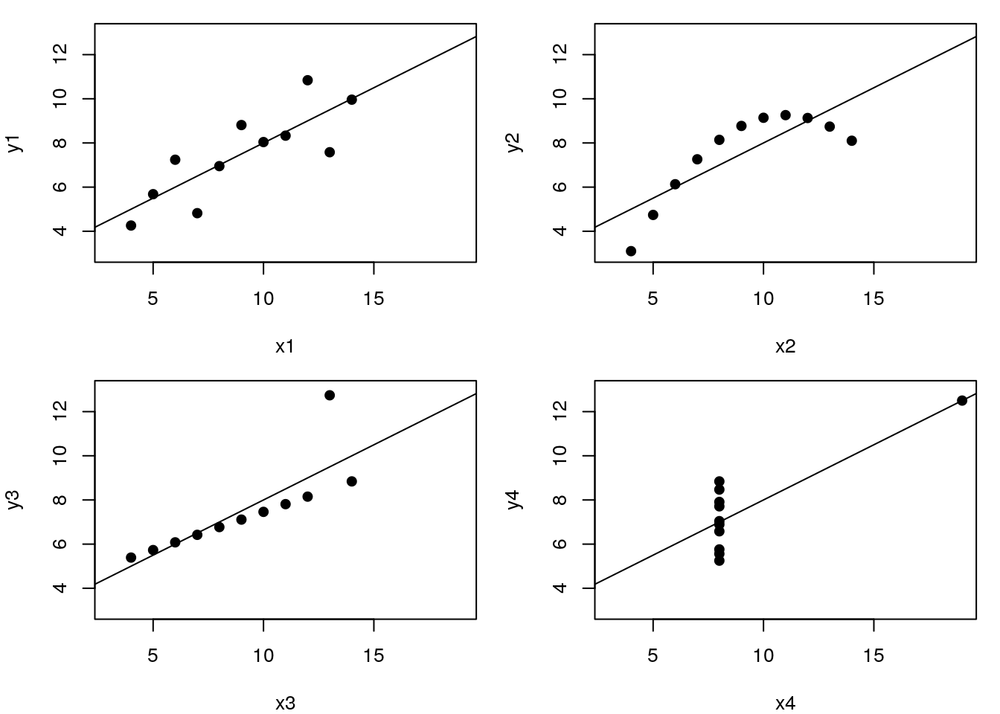

Visualisation of biomolecular data
Last update: Tue May 7 12:08:43 2019
Chapter 1 Introduction
This Visualisation of biomolecular data course was set up as part of the May Institute Computation and statistics for mass spectrometry and proteomics (2018 edition) at Northeastern University, Boston MA. It is aimed at people who are already familiar with the R language and syntax, and who would like to get a hands-on introduction to visualisation, with a focus on biomolecular data in general, and proteomics in particular. This course is meant to be mostly hands-on, with an intuitive understanding of the underlying techniques.
Let’s use the famous Anscombe’s quartet data as a motivating example. This data is composed of 4 pairs of values, \((x_1, y_1)\) to \((x_4, y_4)\):
| x1 | x2 | x3 | x4 | y1 | y2 | y3 | y4 |
|---|---|---|---|---|---|---|---|
| 10 | 10 | 10 | 8 | 8.04 | 9.14 | 7.46 | 6.58 |
| 8 | 8 | 8 | 8 | 6.95 | 8.14 | 6.77 | 5.76 |
| 13 | 13 | 13 | 8 | 7.58 | 8.74 | 12.74 | 7.71 |
| 9 | 9 | 9 | 8 | 8.81 | 8.77 | 7.11 | 8.84 |
| 11 | 11 | 11 | 8 | 8.33 | 9.26 | 7.81 | 8.47 |
| 14 | 14 | 14 | 8 | 9.96 | 8.10 | 8.84 | 7.04 |
| 6 | 6 | 6 | 8 | 7.24 | 6.13 | 6.08 | 5.25 |
| 4 | 4 | 4 | 19 | 4.26 | 3.10 | 5.39 | 12.50 |
| 12 | 12 | 12 | 8 | 10.84 | 9.13 | 8.15 | 5.56 |
| 7 | 7 | 7 | 8 | 4.82 | 7.26 | 6.42 | 7.91 |
| 5 | 5 | 5 | 8 | 5.68 | 4.74 | 5.73 | 6.89 |
Each of these \(x\) and \(y\) sets have the same variance, mean and correlation:
| 1 | 2 | 3 | 4 | |
|---|---|---|---|---|
| var(x) | 11.0000000 | 11.0000000 | 11.0000000 | 11.0000000 |
| mean(x) | 9.0000000 | 9.0000000 | 9.0000000 | 9.0000000 |
| var(y) | 4.1272691 | 4.1276291 | 4.1226200 | 4.1232491 |
| mean(y) | 7.5009091 | 7.5009091 | 7.5000000 | 7.5009091 |
| cor(x,y) | 0.8164205 | 0.8162365 | 0.8162867 | 0.8165214 |
But…
While the residuals of the linear regression clearly indicate fundamental differences in these data, the most simple and straightforward approach is visualisation to highlight the fundamental differences in the datasets.

See also another, more recent example: The Datasaurus Dozen dataset.

1.1 Focus of this course
We will focus on producing visualisations that will enable understanding important features of biomolecular data or the effect of their transformation and analyses. With this in mind, the beauty of the visualisations we will produce won’t be assessed by how visually attractive the figures are, but how they help us understand the data. In the process of data exploration and data analysis, we want to be able to quickly generate and interpret figures, to progress in our understanding. It is of course important to polish the graphics to make them visually appealing and improve communication with the audience, but we won’t focus on these aspects here.
An important aspect of data visualisation is data manipulation, transformation and the format of the data. These topics will be introduced and documented throughout the course.
A last feature of data that is intimately associated with its manipulation and visualisation is its structure. Some visualisations will be much easier if the data is formatted in a certain way. As such, we will describe different formats (long, wide) and data structures (dataframes and more specialised data structure).
The source code for this document is available on GitHub at https://github.com/lgatto/VisualisingBiomolecularData
A short URL for this book is http://bit.ly/biomolvis
1.2 Installation
To install all dependencies, you can run the installation script by running the following line in R:
source("http://bit.ly/biomolvis_install")A complete session information with all packages used to compile this document is available at the end.
1.3 Questions
For any questions or suggestions, please open an issue. Please do add the output of your session information and, of possible, a reproducible example describing your question or suggestion.
1.4 License
This material is licensed under the Creative Commons Attribution-ShareAlike 4.0 License. Some content is inspired by other sources, see the Credit section in the material.
1.5 Useful references
Gatto L, Breckels LM, Naake T, Gibb S. Visualization of proteomics data using R and bioconductor. Proteomics. 2015 Apr;15(8):1375-89. doi: 10.1002/pmic.201400392. PMID: 25690415; PMCID: PMC4510819.
Key M. A tutorial in displaying mass spectrometry-based proteomic data using heat maps. BMC Bioinformatics. 2012;13 Suppl 16:S10. doi: 10.1186/1471-2105-13-S16-S10. Epub 2012 Nov 5. PMID: 23176119; PMCID: PMC3489527.
Gatto L, Christoforou A. Using R and Bioconductor for proteomics data analysis. Biochim Biophys Acta. 2014 Jan;1844(1 Pt A):42-51. doi: 10.1016/j.bbapap.2013.04.032. Epub 2013 May 18. PMID: 23692960.
Conway JR, Lex A, Gehlenborg N. UpSetR: an R package for the visualization of intersecting sets and their properties. Bioinformatics. 2017 Sep 15;33(18):2938-2940. doi: 10.1093/bioinformatics/btx364. PMID: 28645171; PMCID: PMC5870712.